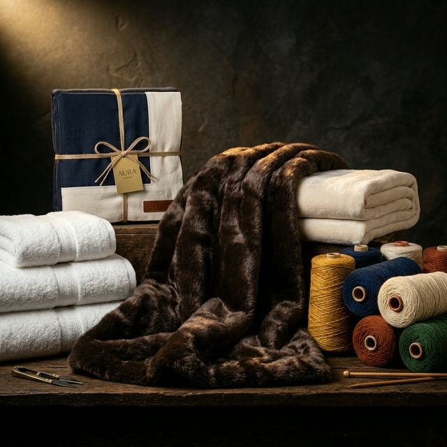
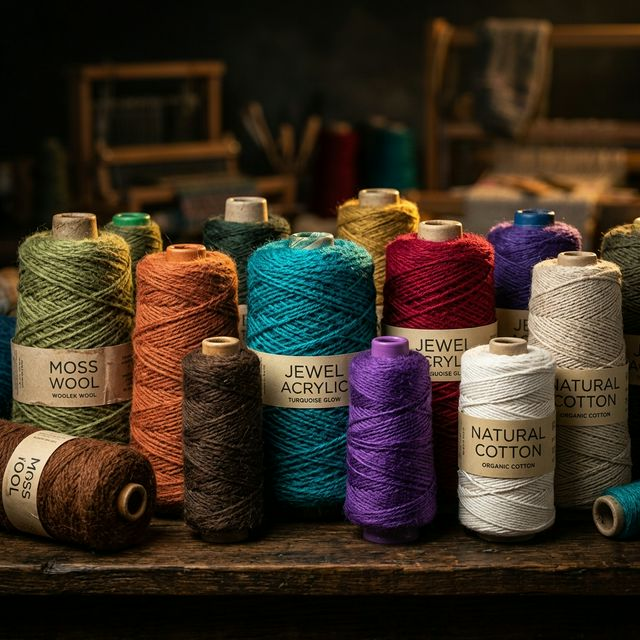
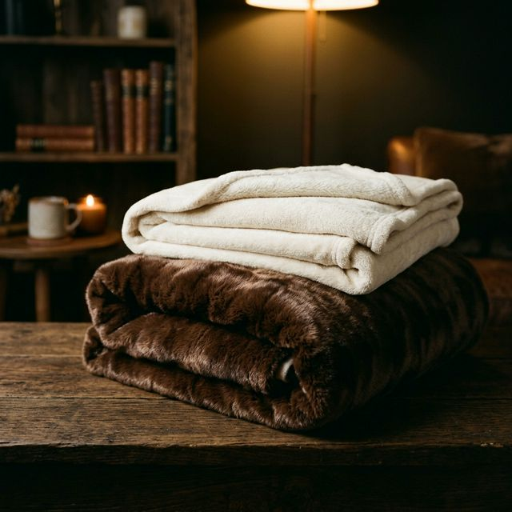
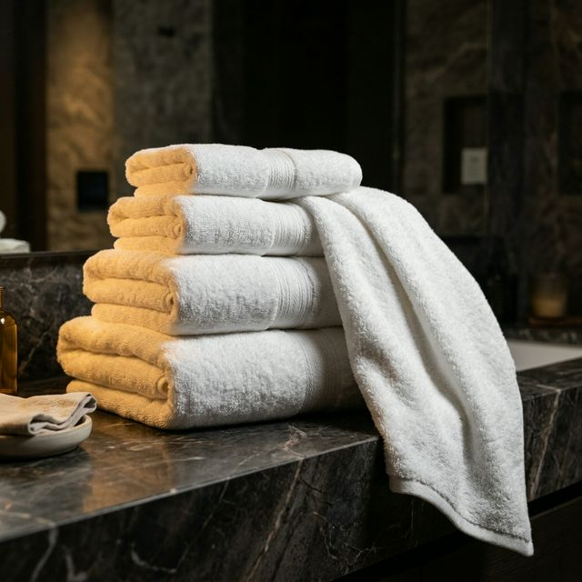

The Art of Thread Since 1982
Crafting excellence in every fiber
From humble beginnings in Panipat to becoming a globally recognised export house, the Jindal legacy stands for uncompromising quality.

Late Mr. Mam Chand Jindal founded Jindal Yarns Private Limited in Panipat, Haryana, with a vision to produce world-class yarn and home textiles.
Expanded into blended and recycled cotton yarns, establishing sustainable manufacturing practices ahead of their time.
Achieved ISO 9001:2008 certification and earned Govt. of India Recognised Export House status. Mr. Amit Jindal and Mr. Jagrit Jindal joined as directors.
A vertically integrated manufacturer with 50+ skilled professionals, exporting premium yarn and textiles to 5+ countries worldwide.
From shoddy acrylic to fine half-wool blends, our yarn portfolio serves diverse global markets.

Versatile acrylic yarn produced from recycled fibers. Available in a wide spectrum of vibrant colors for knitting, weaving, and industrial applications.
Premium 50% wool blended yarn offering the warmth and softness of natural wool with enhanced durability. Ideal for luxury blankets and apparel.
Sustainable cotton blended yarn available in both coloured and white variants. Eco-conscious manufacturing meets premium quality for modern textiles.
From luxurious blankets to precision-cut bedsheets, every product reflects four decades of expertise.

Brushed flannel weave for exceptional warmth. Ideal for cold climates and export markets.
Lightweight, anti-pill polar fleece for outdoor and everyday use. Superior moisture wicking.
Cost-effective blankets manufactured for relief, institutional, and charitable purposes. Bulk export-ready.
Industrial non-woven process blankets. Light, durable, and available in custom colours and weights.
Available in premium cotton blends, each size crafted to exacting dimensions for global markets.
| Size | Dimensions (cm) | Dimensions (inches) | Best For |
|---|---|---|---|
| Single | 152 × 228 | 60 × 90 | Single beds, hostel use |
| Double | 228 × 228 | 90 × 90 | Standard double beds |
| King | 228 × 274 | 90 × 108 | King-size beds |
| Super King | 274 × 274 | 108 × 108 | Premium / export markets |

From lightweight 300 GSM hand towels to ultra-plush 800 GSM bath sheets. 100% cotton terry construction with reinforced selvedge for export-grade durability.
Traditional and contemporary woven carpet designs. Available in custom sizes and patterns for residential and hospitality projects.
Industrial non-woven carpet solutions for events, exhibitions, and commercial flooring. Cost-effective with quick turnaround.
Ergonomic memory foam neck pillows for travel and home. Contoured design with removable, washable covers. Slow-rebound memory foam for optimal support.
Recognised by the Government of India as an Export House, our products reach discerning buyers across 5+ countries.
Our dedicated export team ensures seamless international logistics, customs compliance, and consistent quality standards for every shipment.